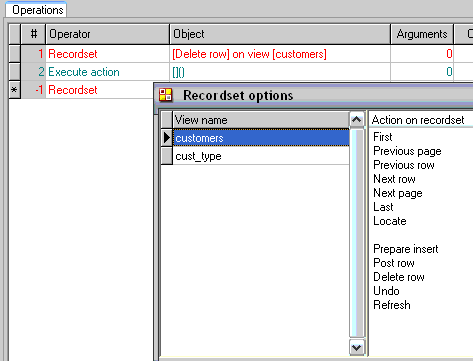

Questo capitolo completa il meccanismo di sviluppo ad eventi.
Vedremo come o2runtime verifichi gli eventi e scateni le azioni.
Le azioni costituiscono la base del modello esecutivo di o2architecture.
Un’azione è costituita da un numero arbitrario di istruzioni (operations).
Le azioni possono invocare l’esecuzione di altre azioni o di programmi e legarsi
fra loro in catene esecutive che, con la presenza di programmi dotati di interfaccia,
possono estendersi a più interazioni client-server.
Il programmatore non deve preoccuparsi della natura degli eventi e delle azioni
che andrà a mettere in relazione, poiché l’o2runtime si occuperà di creare le condizioni
necessarie all’eseguibilità di ogni istruzione richiesta, rendendo disponibili viste sui
dati e informazioni provenienti dal client in un unico contesto.
Ogni azione è costituita da un numero variabile di istruzioni, righe della tabella
Operations.
Nella tabella Operations usare i seguenti comandi:
- F4 per creare una nuova riga
- F3 per cancellare una riga
- F5 per accedere alle interfacce specifiche nelle celle
Object, Arguments e Condition
 Il pulsante Move per spostare il blocco
di righe da From row
a To row, dalla loro posizione nell’elenco delle istruzioni alla posizione
del cursore.
Il pulsante Move per spostare il blocco
di righe da From row
a To row, dalla loro posizione nell’elenco delle istruzioni alla posizione
del cursore.
Ogni istruzione inizia con l’indicazione di un operatore esecutivo: premere
SPACE o una lettera sulla cella Operator per aprire il combo
box di scelta dell’operatore.
Si accede alle interfacce specifiche di ogni istruzione premendo F5
sulle celle Object e Arguments: al momento della creazione di una
nuova istruzione le interfacce vengono presentate automaticamente allo sviluppatore.
Vedere, di seguito, il dettaglio degli operatori.
Se verrà indicata un’espressione nella cella Condizion (F5
per inserire o selezionare dalla lista delle espressioni) per un’istruzione, tale istruzione
verrà eseguita solo se l’espressione sarà valutata a "true". La valutazione
dell’espressione verrà fatta al momento dell’esecuzione dell’istruzione e nel contesto
derivante dalle altre istruzioni. Questo significa che non necessariamente blocchi di
istruzioni con la stessa espressione di Condition verranno eseguiti in blocco.
Gli operatori costituiscono i verbi o metodi dei processi esecutivi. La
complessità e la portata delle operazioni svolte da ogni istruzione, così come
l’interfaccia presentata al programmatore, variano a seconda dell’operatore
selezionato. Vediamo, quindi, i singoli operatori nel dettaglio:
0.13.2.1 Call program
L’operatore Call program sospende l’attuale catena esecutiva per
passare il controllo ad un altro programma: l’esecuzione dell’azione corrente
verrà ripresa al termine dell’esecuzione del programma chiamato.
Se il programma chiamato è di tipo batch (cioè privo di interfacce
che richiedano l’interattività dell’operatore) l’esecuzione dell’azione corrente verrà
ripresa prima di ritornare al client, dopo aver esaurito la catena esecutiva scatenata
dalla sua Initial action.
Se, invece, il programma chiamato è dotato di interfaccia, eseguita e conclusa
la Initial action, la catena esecutiva si arresterà sulla presentazione client
dell’interfaccia e l’esecuzione dell’azione corrente riprenderà solo dopo che
l’operatore avrà chiuso il programma chiamato.
L’istruzione Call program presenterà due interfacce: la prima è l’elenco
dei programmi disponibili nell’applicazione da cui scegliere il programma da chiamare;
la seconda è l’interfaccia di definizione dei paratetri.
Per ulteriori dettagli su questo operatore e sulle tecniche di passaggio di parametri
vedi sezione su Call program e passaggio dei parametri.
0.13.2.2 Close program
L’operatore Close program non richiede parametri e serve a terminare
l’esecuzione del programma corrente, interrompendo l’attuale catena esecutiva e
chiudendo tutte le finestre eventualmente aperte.
Nota bene: le istruzioni eventualmente presenti nell’azione, successive
all’istruzione di Close program, qualora la condition per questa
istruzione venga valutata a "true", non saranno eseguite!
0.13.2.3 Debugger
L’operatore Debugger non richiede parametri e serve ad eseguire il
programma di debugging. Questo operatore si comporta come una
normale istruzione di Call program al programma "debugger", il quale
mostrerà all’operatore/sviluppatore una complessa interfaccia, dalla quale sarà
possibile recuperare informazioni su ogni elemento dell’applicazione, delle viste e
dei programmi coinvolti nell’attuale catena esecutiva.
Nota bene: l’operatore Debugger sarà eseguito solo se l’utente
è loggato con credenziali di sviluppatore, altrimenti l’istruzione non avrà alcun
effetto.
0.13.2.4 Execute action
Questo operatore consente di trasferire il controllo ad un’altra azione del
programma in esecuzione, sospendendo l’esecuzione dell’azione corrente fino
al termine dell’azione chiamata. L’operatore Execute action, in oltre,
consente di reiterare l’esecuzione di un’azione in base a due diversi criterî:
- per ogni record di una vista fino all’esaurimento di tutto il recordset
- fino alla valutazione a "true" di un’espressione
I parametri richiesti sono:
- L’azione da eseguire, da selezionere dall’elenco delle azioni definite per il
programma.
- La condizione di fine loop (End action), un’espressione che, valutata
ad ogni giro del loop, interrompe l’esecuzione se ritorna un valore "true".
Attenzione: se nessuna condizione di fine viene inserita la condizione
è automaticamente impostata a "true", il che significa che l’azione verrà
eseguita una sola volta!
- La vista su cui eseguire il loop (Loop on view) e la direzione
(Direction).
Quando una vista viene specificata (premendo F5 sul campo
Loop on view si accede all’elenco e alla selezione delle viste disponibili)
o2runtime svolgerà le seguenti operazioni:
- La vista selezionata verrà posizionata sul primo (Direction =
"ascending") o sull’ultimo (Direction = "Descending") record del
recordset.
- Ad ogni giro del loop verrà valutata la condizione di fine e, fino al suo verificarsi,
il puntatore di selezione della vista verrà fatto avanzare (o retrocedere) fino
al totale esaurimento del recordset.
- Ad ogni giro del loop verrà eseguita l’azione indicata.
Al verificarsi della condizione di End action o all’esaurirsi del recordset
l’istruzione di Execute action sarà terminata.
Nota bene: è importante che le condizioni indicate si risolvano sempre
in un esito, cioè non creino loop infiniti. Ad esempio: un’istruzione di Execute
action senza indicazione di view e con condizione di fine che valuti sempre a
"false" creerà un loop infinito, così come un’azione che, reiterata su una vista fino
al suo esaurimento, ogni volta ne ripristini il puntatore di selezione.
0.13.2.5 Goto
L’istruzione Goto termina in maniera irreversibile l’attuale catena
esecutiva e chiude tutti i programmi eventualmente aperti. Il controllo viene
passato ad un nuovo programma (dalla cui Initial action partirà la nuova
catena esecutiva) o ad un indirizzo web (url) che solitamente condurrà l’operatore
fuori dalla sessione o2.
L’interfaccia chiederà di selezionare tra i due possibili esiti (Program
o Url).
Nel caso di Url sarà possibile inserire nella cella Arguments
un’espressione il cui risultato sarà usato come indirizzo web, così come lo si
scriverebbe nella barra degli indirizzi di un browser.
Nel caso di Program sarà possibile scegliere il programma fra quelli
definiti nell’applicazione o inserire un’espressione, il cui risultato sarà interpretato
come nome del programma da eseguire. Sarà possibile passare parametri al
programma chiamato ma senza attenderne ritorno.
0.13.2.6 Input/output
L’istruzione Input/Output permette di produrre file XML
a partire dai dati delle viste.
0.13.2.7 Message
L’operatore Message permette di visualizzare un messaggio al client.
Il messaggio può essere di due tipi, fra cui l’interfaccia chiederà di scegliere:
- Message box: il messaggio sarà comunicato al client come
alert di javascript, cioè una finestra modale con
un solo pulsante di Ok e con il testo del messaggio. Se più messaggi
verranno inviati al client in una stessa sessione esecutiva del server, verranno
visualizzati uno di seguito all’altro, nell’ordine in cui sono stati invocati.
- Status bar: il testo del messaggio comparirà nella barra di stato (se
visibile) della form attiva. Nel caso che più messaggi di questo tipo vengano
inviati al client, soltanto l’ultimo sarà visibile all’operatore.
Il messaggio è la stringa risultante dall’espressione indicata in
Arguments.
0.13.2.8 Print
Produce un file PDF, a partire da una serie di file XML
prodotti dalle istruzioni di Input/output.
0.13.2.9 Recordset
L’operatore Recordset rende disponibili una serie di funzionalità sulle
viste del programma.

Vediamole in dettaglio:
- First: posiziona la vista sul primo record del recordset e con il
puntatore di selezione a zero (primo record della vista).
- Previous page: mantiene il puntatore di selezione inalterato e sposta
la vista indietro, di un numero di record uguale alle
righe richieste per la vista o, se non ci sono, si
comporta come First.
- Previous row: sposta il puntatore di selezione della vista sul record
precedente oppure, se quello attuale è il primo della
vista, si comporta come Previous page e poi sposta
il puntatore di selezione all’ultimo record della
vista.
- Next row: sposta il puntatore di selezione della vista sul record
successivo oppure, se quello attuale è l’ultimo della vista,
si comporta come Next page e poi sposta il puntatore
di selezione al primo record della vista.
- Next page: mantiene il puntatore di selezione inalterato e sposta la
vista avanti, di un numero di record uguale alle righe
richieste per la vista o, se non ci sono, si comporta come
Last.
- Last: posiziona la vista sull’ultimo record del recordset e con il
puntatore di selezione uguale al numero di righe richieste per
la vista – 1 (ultimo record della vista).
- Locate: posiziona la vista sul primo record che soddisfi i criteri.
- Prepare insert: pone la vista in stato di inserimento, cioè su un
record puramente virtuale, con i campi tutti
valorizzati al proprio default; nel caso che a questa
operazione non segua un’operazione di Postrow,
il record virtuale andrà perduto al primo spostamento
del puntatore di selezione della vista.
- Post row: se il record corrente ha subito modifiche, scrive tali
modifiche su database. Prima di eseguire la scrittura viene
fatto il seguente controllo sui valori dei segmenti di chiave:
- Se viene modificata la chiave e la nuova chiave non esiste, al record
viene modificata la chiave.
- Se viene modificata la chiave e la nuova chiave già esiste, si risolve
in errore di chiave duplicata.
- Se si è in inserimento e la nuova chiave non esiste, il record viene
inserito.
- Se si è inserimento e la nuova chiave già esiste, si risolve
in errore di chiave duplicata.
- Delete row: cancella fisicamente il record corrente dal database.
- Undo: annulla le eventuali modifiche apportate al record corrente e
valorizza ogni campo all’ultimo valore letto dal database.
- Refresh: rilegge la vista attuale dal database, caricandone le
eventuali modifiche apportate da altri programmi o
operatori.
0.13.2.10 Remark
L’operatore Remark consente di inserire un commento fra le varie
istruzioni di un’azione, al fine di inserire note per la manutenzione, ottenere aspetti
grafici che aiutino la lettura e quant’altro serva allo sviluppatore: questa istruzione
non ha alcun effetto di runtime. Per accedere al testo della nota premere
F5 sulla cella Object.
0.13.2.11 Return parameter
Valorizza un parametro del programma, in modo da restituire un valore al
programma chiamante: a tal fine il parametro deve essere passato by
reference (vedi sezione sul passaggio di parametri).
F5 sulla cella Object per selezionare il parametro dall’elenco
dei parametri definiti e F5 sulla cella Arguments per impostare
l’espressione di valore.
0.13.2.12 Set menu
Imposta il menu selezionato dall’elenco (F5 sulla cella Object)
come menu di applicazione, ovvero lo rende visibile come barra dei menu, mentre ogni
suo sottomenu sarà accessibile come menu a tendina.
0.13.2.13 Update
Le istruzioni di Update costituiscono in o2 il modo di assegnare un
valore ad un campo o ad una variabile. A seguito di un’istruzione Update
il campo indicato (F5 sulla cella Object) prenderà il valore
ritornato dall’espressione di valore (F5 sulla cella Arguments).
Nota bene: non lasciarsi ingannare dal nome dell’operatore. Se si
esegue un’istruzione di Update sul campo di una vista, la modifica non sarà
comunicata al database (e quindi non sarà scritta in effettiva su disco) fino alla
successiva istruzione di Recordset Postrow. Prima di allora l’esecuzione si
può interrompere (Close program o Goto) oppure può cambiare il
puntatore di selezione della vista o intervenire azioni di Recordset Undo: in
ognuno di questi, e in altri casi, le modifiche apportate ai campi con le istruzioni
Update non verranno riportate su database.
0.13.2.14 Execute script
L’istruzione Execute script accetta come solo parametro
(F5 sulla cella Arguments) un’espressione da valutare.
Il valore di ritorno dell’espressione viene ignorato ma la sua valutazione
costituisce il metodo di base per l’esecuzione di script PHP.
Quindi, solitamente, l’espressione avrà una forma del tipo: